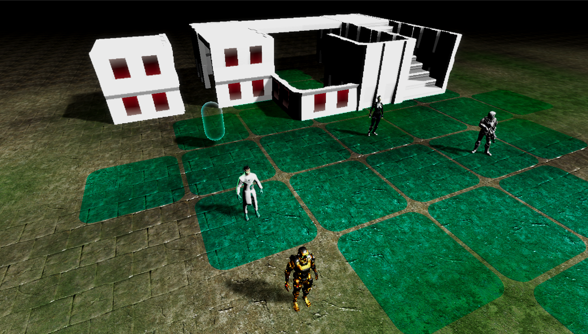
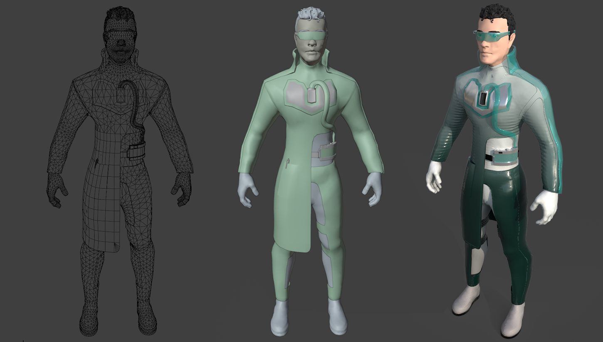
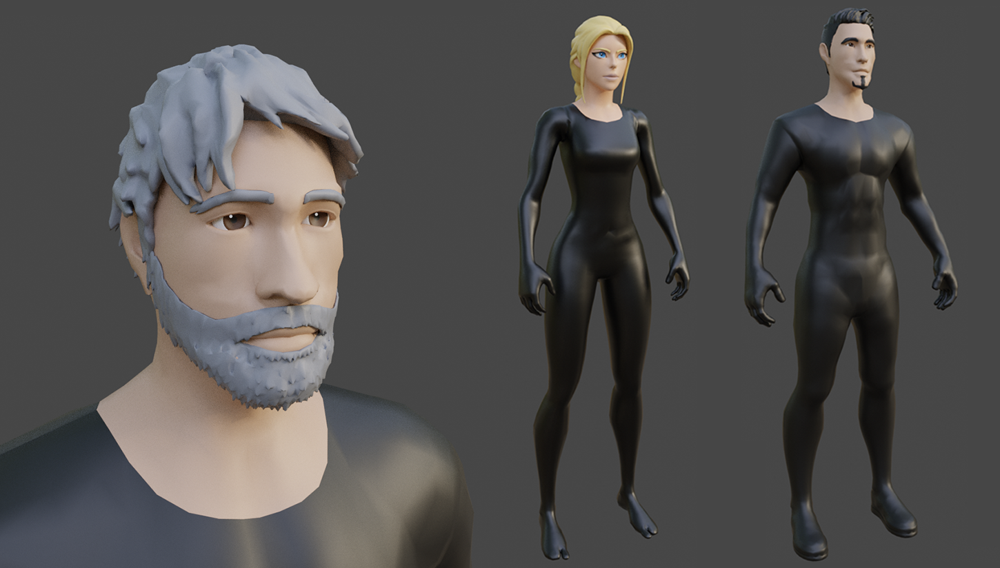
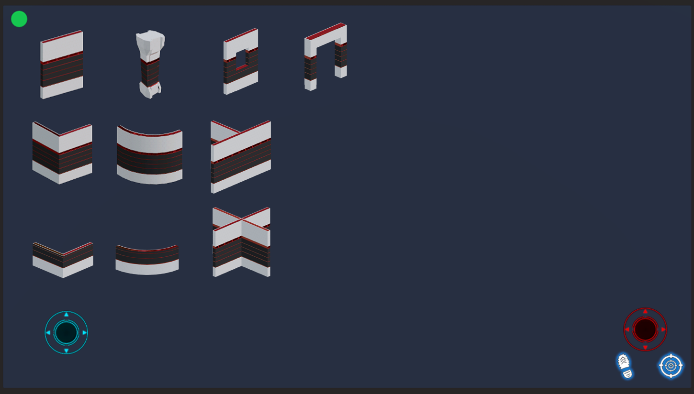

Tactical RPG Project
A sci-fi and fantasy tactical adventure blending open-world planetary exploration with turn-based combat across multiple worlds.

OVERVIEW
An immersive universe across multiple planets and technologies. The experience transitions dynamically from third-person isometric exploration into tactical, grid-based turn combat. Designed for Android and PC.
MY ROLE
Technical Art, character concept design, 3D character modeling and texturing, modular environment design, custom gameplay tools and Unity modular construction tools.
3D Pipeline & Modular Assets
Optimized character art and modular structures for sci-fi environments.



CHARACTERS
Unique and original character models optimized for clean silhouette readability and fluid animation. Each character has its own weapons and skills.
MODULARITY
Modular building pieces designed for level and environment building without the need of creating each environment or building as a separate model.
Unity Integration & Multiplayer Architecture
Turn flow management for multiplayer gaming using a priority and attributes system for each character.
TURN SEQUENCING
Robust architecture handling team turn alternation, action validation, and player synchronization.
MULTIPLAYER READY
Systems structured to support cooperative or competitive multiplayer sessions with an UI ready for mobile devices.
Gameplay Tools and UI
In-game scenario creation and modular construction with assets grid visualization and selection.

IN-GAME BUILDER
Custom gameplay tool allowing players to construct scenarios and structures dynamically using modular pieces.
ASSETS BUILDER UI
The assets builder UI lets the player and the level designer to select and place modular assets in the scene building complex environments.
Gameplay Mechanics
Exploration and tactical combat loops.
EXPLORATION MODE
A character leads the team through sci-fi environments, resolving puzzles while accomplishing the mission objectives.
TURN-BASED TACTICS
When detected, the exploration mode transitions into tactical turn-based combat where each player plans and executes character actions sequentially.
Technologies
Main tools and tech stack behind the project.